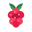
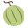

<!DOCTYPE html>
<html lang="es">
<head>
<meta charset="UTF-8">
<meta name="viewport" content="width=device-width, initial-scale=1.0">
<title>AgroCampo</title>
<link rel="preconnect" href="https://fonts.googleapis.com">
<link rel="preconnect" href="https://fonts.gstatic.com" crossorigin>
<link href="https://fonts.googleapis.com/css2?family=Inter:wght@400;500;600;700;800;900&display=swap" rel="stylesheet">
<script src="https://cdnjs.cloudflare.com/ajax/libs/lucide/0.460.0/lucide.min.js"></script>
<style>
:root{--brand:#2A6E54;--brand-dark:#1f4b3a;--brand-soft:#BFE1D0;--accent:#EDB240;--accent-soft:#F6E4B7;--sky:#2563eb;--sky-dark:#1d4ed8;--sky-soft:#DBEAFE;--green:#2A6E54;--green-soft:#DDF4EA;--leaf:#3f7a50;--amber:#EDB240;--amber-soft:#FFF1C7;--rose:#B9435B;--rose-soft:#FFE0E6;--violet:#6657A6;--violet-soft:#E8E4FF;--ink:#17372b;--muted:#638175;--line:#B7DCCB;--bg:#FFFFFF;--card:#FFFFFF;--display:"Inter",sans-serif;--body:"Inter",sans-serif}
*{box-sizing:border-box}html,body{margin:0;min-height:100%;font-family:var(--body);color:var(--ink);background:#8FC2AA}body{display:flex;justify-content:center;align-items:center;padding:18px}button,input,textarea,select{font:inherit}button{cursor:pointer}
.device-frame{width:min(100vw,430px);height:min(100vh - 36px,900px);border-radius:34px;background:var(--brand-dark);padding:10px;box-shadow:0 28px 70px -30px rgba(31,75,58,.8),0 0 0 1px rgba(255,255,255,.28);position:relative}.device-frame:before{content:"";position:absolute;top:17px;left:50%;transform:translateX(-50%);width:92px;height:24px;border-radius:0 0 18px 18px;background:var(--brand-dark);z-index:40}
.app{width:100%;height:100%;min-height:0;background:var(--bg);display:flex;flex-direction:column;position:relative;box-shadow:0 0 0 1px rgba(31,75,58,.14);border-radius:30px;overflow:hidden}
.top{position:sticky;top:0;z-index:10;background:rgba(255,255,255,.96);backdrop-filter:blur(12px);padding:28px 16px 12px;border-bottom:1px solid rgba(183,220,203,.9);flex:none}
.status{display:flex;justify-content:space-between;align-items:center;font-size:12px;font-weight:700;color:var(--muted);margin-bottom:8px}.sync{display:inline-flex;gap:5px;align-items:center;border-radius:999px;padding:4px 8px;background:var(--green-soft);color:var(--green)}.sync.off{background:var(--amber-soft);color:#92400e}.sync i,.status i{width:14px;height:14px}
.bar{display:flex;align-items:center;gap:10px}.back{border:0;background:var(--brand);color:#fff;border-radius:22px;width:46px;height:46px;display:grid;place-items:center;flex:none;box-shadow:0 10px 18px -12px rgba(31,75,58,.9)}.profile-btn{border:1.5px solid var(--line);background:#fff;color:var(--brand);border-radius:22px;width:46px;height:46px;display:grid;place-items:center;flex:none;margin-left:auto}.icon-btn{border:1px solid var(--line);background:#fff;color:var(--brand);border-radius:22px;width:42px;height:42px;display:grid;place-items:center;flex:none}.back i,.icon-btn i,.profile-btn i{width:22px;height:22px}
.brandmark{width:42px;height:42px;border-radius:22px;background:var(--brand);display:grid;place-items:center;color:#fff;flex:none}.brandmark i{width:23px;height:23px}.heading{min-width:0;flex:1}.eyebrow{font-size:13px;text-transform:uppercase;letter-spacing:.7px;font-weight:900;color:var(--brand)}h1{font-family:var(--display);font-size:28px;letter-spacing:0;margin:0;line-height:1.05;font-weight:900}.sub{font-size:12px;color:var(--muted);margin-top:3px;line-height:1.35}
.view{flex:1;overflow:auto;padding:14px 16px 92px}.stack{display:flex;flex-direction:column;gap:12px}.card,.tile,.banner{background:var(--card);border:1.5px solid var(--line);border-radius:22px;padding:14px;box-shadow:0 12px 24px -20px rgba(31,75,58,.45)}.row{display:flex;align-items:center;gap:12px}.grow{flex:1;min-width:0}.title{font-family:var(--display);font-size:16px;font-weight:800;line-height:1.15}.text{font-size:12.5px;color:var(--muted);line-height:1.45;margin-top:3px}.small{font-size:11.5px;color:var(--muted);line-height:1.4}
.ico,.crop{width:46px;height:46px;border-radius:9px;display:grid;place-items:center;flex:none;font-family:var(--display);font-weight:800}.ico i{width:22px;height:22px}button .ico{background:transparent!important;width:28px;height:28px}button .ico i{width:24px;height:24px}.crop svg,.mini-crop svg,.quad svg{width:72%;height:72%;display:block}i[data-lucide]{display:inline-block;width:20px;height:20px;line-height:0;flex:none}i[data-lucide] svg{width:100%;height:100%;display:block;stroke:currentColor;stroke-width:2;stroke-linecap:round;stroke-linejoin:round;fill:none}.card.row>i[data-lucide]{width:18px;height:18px;color:var(--muted)}.sky{background:var(--sky-soft);color:var(--sky-dark)}.green{background:var(--green-soft);color:var(--green)}.amber{background:var(--amber-soft);color:var(--brand-dark)}.rose{background:var(--rose-soft);color:var(--rose)}.violet{background:var(--violet-soft);color:var(--violet)}
.hero{border-radius:24px;padding:17px;background:var(--brand);color:#fff;position:relative;overflow:hidden;min-height:150px;border:1.5px solid var(--brand-dark)}.hero:after{content:"";position:absolute;right:-42px;top:-42px;width:142px;height:142px;border-radius:24px;background:var(--accent);opacity:.92;transform:rotate(12deg)}.hero h2{font-family:var(--display);font-size:38px;margin:6px 0 0;letter-spacing:0}.hero .line{display:flex;gap:8px;align-items:center;font-size:12px;font-weight:700;position:relative;z-index:1}.hero .line i{width:15px;height:15px}.hero-grid{display:grid;grid-template-columns:1fr 1fr;gap:8px;margin-top:15px;position:relative;z-index:1}.hero-pill{background:rgba(255,255,255,.14);border:1px solid rgba(255,255,255,.26);border-radius:18px;padding:8px;font-size:11px;font-weight:700}.hero-pill .value{font-weight:400}
.quick{display:grid;grid-template-columns:1fr 1fr;gap:10px}.tile{min-height:78px;text-align:left;border:1.5px solid var(--line);border-radius:22px;background:#fff;color:var(--ink);display:flex;align-items:center;gap:11px}.tile i{width:24px;height:24px;margin:0;color:var(--brand)}.tile .label{font-family:var(--display);font-weight:800;font-size:14px}.tile .hint{font-size:11px;color:var(--muted);margin-top:3px}.section{display:flex;justify-content:space-between;align-items:center;margin:5px 2px 0}.section h2{font-family:var(--display);font-size:15px;margin:0;color:var(--brand-dark)}.link{border:0;background:transparent;color:var(--brand);font-size:12px;font-weight:800;padding:6px}
.btn{min-height:48px;border:1.5px solid var(--line);border-radius:22px;padding:12px 14px;font-family:var(--display);font-weight:800;display:flex;align-items:center;justify-content:center;gap:8px;color:var(--brand);background:#fff}.btn i{width:18px;height:18px}.btn.green{background:#fff;color:var(--brand)}.btn.amber{background:#fff;color:var(--brand)}.btn.ghost{background:#fff;color:var(--brand);border:1.5px solid var(--line)}.btn.warn{background:#fff;color:var(--rose)}.btn-row{display:grid;grid-template-columns:1fr 1fr;gap:10px}
.banner{display:flex;align-items:flex-start;gap:11px}.banner i{width:21px;height:21px;flex:none;margin-top:1px}.banner.alert{background:var(--rose-soft);border-color:#b4868d;color:#7c1f2d}.banner.info{background:var(--sky-soft);border-color:var(--line);color:var(--sky-dark)}.banner.warn{background:var(--amber-soft);border-color:#d39b2d;color:var(--brand-dark)}.banner.ok{background:var(--green-soft);border-color:var(--line);color:var(--brand-dark)}
.sector-list{display:flex;flex-direction:column;gap:10px}.sector{width:100%;border:1.5px solid var(--line);background:var(--card);border-radius:22px;padding:13px;text-align:left;color:var(--ink);display:flex;gap:12px;align-items:center;min-height:76px}.sector-head .edit-sector{order:3;margin-left:auto}.crop{color:#fff;font-size:17px;overflow:hidden}.crop img{width:72%;height:72%;display:block;object-fit:contain}.edit-sector{width:42px;height:42px;border-radius:22px;border:1.5px solid var(--line);background:#fff;color:var(--brand);display:grid;place-items:center;flex:none}.edit-sector i{width:19px;height:19px}.state-dot{width:10px;height:10px;border-radius:3px;display:inline-block;margin-right:6px}
.map{height:315px;border-radius:24px;border:1.5px solid var(--line);position:relative;overflow:hidden;background-image:linear-gradient(rgba(42,110,84,.08),rgba(42,110,84,.18)),url("ImagenSuperior.png");background-size:cover;background-position:center}
.map:before{content:"";position:absolute;inset:0;background:rgba(255,255,255,.03)}.parcel{position:absolute;left:12px;right:12px;top:12px;bottom:12px;border:3px solid rgba(255,255,255,.86);border-radius:22px;background:rgba(42,110,84,.08)}
.quad{position:absolute;z-index:1;border:2px solid rgba(255,255,255,.9);border-radius:20px;color:#fff;font-family:var(--display);font-weight:900;display:flex;flex-direction:column;align-items:center;justify-content:center;text-align:center;padding:6px;font-size:12px;box-shadow:0 8px 22px -12px rgba(0,0,0,.75);min-width:0;overflow:visible;backdrop-filter:blur(1px)}.quad img{width:min(28px,42%);height:min(28px,42%);object-fit:contain;display:block;margin-bottom:2px}.quad span{display:block;font-size:10px;font-weight:700;margin-top:1px;max-width:100%;overflow:hidden;text-overflow:ellipsis}.vertex{position:absolute;width:18px;height:18px;border-radius:9px;background:#fff;border:2px solid currentColor;box-shadow:0 3px 9px -4px #000;z-index:3;touch-action:none}.vertex.on{background:var(--accent);border-color:#fff;color:var(--brand)}
.map-google{height:315px;border-radius:24px;border:1.5px solid var(--line);overflow:hidden;background:#eef7f2}
.mini-map{height:185px}
.metrics{display:grid;grid-template-columns:1fr 1fr;gap:9px}.metric{background:#fff;border:1.5px solid var(--line);border-radius:22px;padding:12px}.metric.weather{background:#fff;color:var(--ink)}.metric.weather .metric-head{display:flex;align-items:center;justify-content:space-between;gap:8px}.metric.weather i{width:20px;height:20px;color:#f59e0b}.metric .k{font-size:10px;text-transform:uppercase;letter-spacing:.5px;color:var(--muted);font-weight:800}.metric.weather .k{color:var(--muted)}.metric .v{font-family:var(--display);font-size:24px;font-weight:900;margin-top:3px}.actions{display:grid;grid-template-columns:repeat(2,1fr);gap:10px}.action{min-height:78px;background:#fff;border:1.5px solid var(--line);border-radius:22px;padding:13px;text-align:left;color:var(--ink);box-shadow:0 8px 18px -18px rgba(31,75,58,.55);display:flex;align-items:center;gap:11px}.action i{width:24px;height:24px;margin:0;color:var(--brand)}.action strong{font-family:var(--display);display:block;font-size:14px}
label{font-size:12px;font-weight:800;color:var(--brand-dark);display:block;margin-bottom:6px}input,select,textarea{width:100%;border:1.5px solid var(--line);border-radius:22px;background:#fff;color:var(--ink);padding:13px 14px;min-height:48px;outline:none}textarea{min-height:92px;resize:vertical}input:focus,select:focus,textarea:focus{border-color:var(--brand);box-shadow:0 0 0 3px rgba(42,110,84,.18)}.form{display:flex;flex-direction:column;gap:12px}.grid2{display:grid;grid-template-columns:1fr 1fr;gap:10px}.chips{display:flex;gap:8px;flex-wrap:wrap}.chip{border:1.5px solid var(--line);background:#fff;color:var(--brand-dark);border-radius:22px;padding:10px 12px;font-weight:800;font-size:12px}.chip svg,.chip img{width:28px;height:28px;display:block}.chip.on{background:var(--brand);border-color:var(--brand);color:#fff}
.sector-picker{display:flex;flex-direction:column;gap:8px}.sector-choice{width:100%;border:1.5px solid var(--line);background:#fff;color:var(--ink);border-radius:22px;padding:10px 12px;display:flex;align-items:center;gap:10px;text-align:left;font-weight:800;min-height:52px}.sector-choice .mini-crop{width:32px;height:32px;border-radius:14px;display:grid;place-items:center;overflow:hidden;flex:none}.sector-choice .mini-crop img{width:72%;height:72%;object-fit:contain;display:block}.sector-choice.on{border-color:var(--brand);box-shadow:0 0 0 3px rgba(42,110,84,.18)}
.timeline{display:flex;flex-direction:column;gap:10px}.event{display:flex;gap:12px;align-items:flex-start}.event-card{background:#fff;border:1.5px solid var(--line);border-radius:22px;padding:13px;box-shadow:0 8px 18px -18px rgba(31,75,58,.55)}.event .mark{width:28px;height:28px;border-radius:0;display:grid;place-items:center;flex:none;background:transparent;color:var(--brand);margin-top:2px}.event .mark i{width:22px;height:22px}.tag{display:inline-flex;align-items:center;border-radius:12px;padding:3px 7px;font-size:10px;font-weight:800;background:#fff;color:var(--sky-dark);border:1px solid var(--line)}
.ai-screen{min-height:calc(min(100vh - 36px,900px) - 178px);display:flex;flex-direction:column}.ai-screen .chat{min-height:0}.chat{display:flex;flex-direction:column;gap:10px;min-height:260px}.bubble{max-width:84%;padding:11px 13px;border-radius:10px;font-size:13px;line-height:1.45}.bubble.me{align-self:flex-end;background:var(--brand);color:#fff;border-bottom-right-radius:3px}.bubble.ai{align-self:flex-start;background:var(--card);border:1.5px solid var(--line);border-bottom-left-radius:3px}.composer{position:sticky;bottom:0;background:linear-gradient(180deg,rgba(220,239,231,.25),var(--bg) 35%);padding-top:10px;display:flex;gap:8px;margin-top:auto}.composer input{border-radius:8px}.send{width:50px;height:50px;border-radius:8px;border:0;background:var(--brand);color:#fff;display:grid;place-items:center;flex:none}.send i{width:20px;height:20px}
.bottom{position:absolute;left:0;right:0;bottom:0;height:82px;background:rgba(255,255,255,.98);border-top:1.5px solid rgba(143,194,170,.8);border-radius:14px 14px 0 0;display:grid;grid-template-columns:repeat(5,1fr);align-items:end;padding:8px 8px 13px;z-index:20;box-shadow:0 -14px 28px -24px rgba(31,75,58,.55)}.tab{border:0;background:transparent;color:var(--muted);display:flex;flex-direction:column;align-items:center;justify-content:flex-end;gap:5px;height:58px;font-size:11px;font-weight:800;border-radius:8px;position:relative}.tab i{width:20px;height:20px}.tab.on{color:var(--brand)}.tab.fab{height:76px;margin-top:-30px;color:var(--muted);justify-content:flex-end}.tab.fab i{width:28px;height:28px;background:#fff;color:var(--brand);border:1.5px solid var(--line);border-radius:16px;padding:13px;box-sizing:content-box;box-shadow:0 16px 30px -14px rgba(31,75,58,.35)}.tab.fab.on i{background:#fff;color:var(--brand)}.tab.fab span{margin-top:1px}
.toast{position:fixed;left:50%;bottom:86px;transform:translateX(-50%);width:min(calc(100vw - 28px),452px);background:var(--brand);color:#fff;border-radius:8px;padding:12px 14px;font-size:13px;font-weight:700;display:none;z-index:30}.toast.show{display:block}
.profile-head{align-items:center;text-align:left}.avatar{width:68px;height:68px;border-radius:18px;background:var(--sky-soft);color:var(--sky-dark);display:grid;place-items:center;flex:none}.avatar i{width:34px;height:34px}.setting-group{display:flex;flex-direction:column;gap:0;padding:4px 0}.setting-row{width:100%;border:0;background:transparent;color:var(--ink);display:flex;align-items:center;gap:11px;padding:11px 14px;text-align:left}.setting-row+.setting-row{border-top:1px solid rgba(154,169,183,.45)}.setting-row i{width:20px;height:20px;color:var(--sky-dark)}.setting-value{margin-left:auto;color:var(--amber);font-size:11px;font-weight:900;text-align:right}
@media (max-width:520px){body{padding:0}.device-frame{width:100vw;height:100vh;border-radius:0;padding:0;box-shadow:none}.device-frame:before{display:none}.app{border-radius:0}.top{padding-top:14px}.ai-screen{min-height:calc(100vh - 174px)}}
@media (max-width:360px){.view{padding-left:12px;padding-right:12px}.metrics,.grid2{grid-template-columns:1fr}.map{padding:26px 14px 28px;gap:6px}.quad{font-size:11px}.quad span{font-size:9px}}
</style>
</head>
<body>
<div class="device-frame">
<div class="app">
  <header class="top" id="top"></header>
  <main class="view" id="view"></main>
  <nav class="bottom" id="bottom"></nav>
  <div class="toast" id="toast"></div>
</div>
</div>
<script>
const todayLabel = '23 agosto';
const state = {
  route: location.hash || '#inicio', online: true, selectedSectorId: 1, selectedIrrigationType: 'goteo', selectedActivityType: 'Suelo', actionSectorLocked: false,
  soilDraft: { ph: 6.3, humidity: 42, soilTemp: 14, conductivity: 1.4, n: 28, p: 15, k: 34, fertility: 'Media' },
  alerts: [],
  weather: { temp: 18, humidity: 72, condition: 'Nublado parcial', frost: 'Riesgo elevado', updated: 'Actualizado 08:15' },
  chatMessages: [
    { from: 'me', text: 'Necesito saber a que hora puedo regar este sector.' },
    { from: 'ai', text: 'Revisa viento, humedad y estado del suelo antes de decidir el riego.' }
  ],
  sectors: [
    { id: 1, name: 'Cuadrante 1', crop: 'Frambuesa', cropKey: 'FR', icon: 'raspberry', color: '#e11d48', status: 'Bien', statusColor: '#16a34a', irrigation: 'goteo', season: 2026, previousCrop: 'Arandano', lastIrrigation: 'Hoy', lastMeasurement: '22 junio', plants: 43 },
    { id: 2, name: 'Cuadrante 2', crop: 'Arandano', cropKey: 'AR', icon: 'berries', color: '#2563eb', status: 'Revisar helada', statusColor: '#f59e0b', irrigation: 'goteo', season: 2026, previousCrop: 'Frambuesa', lastIrrigation: 'Ayer', lastMeasurement: '21 junio', plants: 36 },
    { id: 3, name: 'Cuadrante 3', crop: 'Papas', cropKey: 'PA', icon: 'root', color: '#92400e', status: 'Bien', statusColor: '#16a34a', irrigation: 'surco', season: 2026, previousCrop: 'Maiz', lastIrrigation: '20 junio', lastMeasurement: '20 junio', plants: 72 },
    { id: 4, name: 'Cuadrante 4', crop: 'Sandia y melones', cropKey: 'SM', icon: 'watermelon', color: '#16a34a', status: 'Floracion', statusColor: '#16a34a', irrigation: 'goteo', season: 2026, previousCrop: 'Papas', lastIrrigation: 'Ayer', lastMeasurement: '19 junio', plants: 64 },
    { id: 5, name: 'Cuadrante 5', crop: 'Maiz', cropKey: 'MZ', icon: 'corn', color: '#ca8a04', status: 'Revisar riego', statusColor: '#f59e0b', irrigation: 'gravedad', season: 2026, previousCrop: 'Frutilla', lastIrrigation: '21 junio', lastMeasurement: '18 junio', plants: 110 },
    { id: 6, name: 'Cuadrante 6', crop: 'Physalis', cropKey: 'PH', icon: 'physalis', color: '#d97706', status: 'Bien', statusColor: '#16a34a', irrigation: 'goteo', season: 2026, previousCrop: 'Arandano', lastIrrigation: 'Hoy', lastMeasurement: '22 junio', plants: 52 },
    { id: 7, name: 'Cuadrante 7', crop: 'Frutilla', cropKey: 'FT', icon: 'strawberry', color: '#db2777', status: 'Bien', statusColor: '#16a34a', irrigation: 'aspersion', season: 2026, previousCrop: 'Papas', lastIrrigation: '20 junio', lastMeasurement: '21 junio', plants: 58 },
    { id: 8, name: 'Cuadrante 8', crop: 'Apicultura', cropKey: 'AP', icon: 'apicultura', color: '#b45309', status: 'Colmenas activas', statusColor: '#16a34a', irrigation: 'goteo', season: 2026, previousCrop: 'Pradera', lastIrrigation: 'No aplica', lastMeasurement: '23 junio', plants: 18, hives: 18, beekeeper: 'Camilo', queenStatus: 'Postura regular', feeding: 'Reservas suficientes', beeHealth: 'Sin signos criticos' }
  ],
  selectedMapSectionId: 1,
  selectedVertex: 1,
  googleMaps: { apiKey: '', enabled: false, center: { lat: -38.7359, lng: -72.5904 }, zoom: 17 },
  mapSections: [
    { id: 1, sectorId: 1, gps: [{lat:-38.7356,lng:-72.5910},{lat:-38.7356,lng:-72.5906},{lat:-38.7360,lng:-72.5906},{lat:-38.7360,lng:-72.5910}], vertices: [{x:9,y:12},{x:32,y:10},{x:31,y:34},{x:8,y:35}] },
    { id: 2, sectorId: 2, gps: [{lat:-38.7356,lng:-72.5906},{lat:-38.7356,lng:-72.5902},{lat:-38.7360,lng:-72.5902},{lat:-38.7360,lng:-72.5906}], vertices: [{x:34,y:10},{x:57,y:11},{x:56,y:35},{x:33,y:34}] },
    { id: 3, sectorId: 3, gps: [{lat:-38.7356,lng:-72.5902},{lat:-38.7356,lng:-72.5898},{lat:-38.7360,lng:-72.5898},{lat:-38.7360,lng:-72.5902}], vertices: [{x:59,y:12},{x:84,y:14},{x:82,y:36},{x:58,y:35}] },
    { id: 4, sectorId: 4, gps: [{lat:-38.7360,lng:-72.5910},{lat:-38.7360,lng:-72.5906},{lat:-38.7364,lng:-72.5906},{lat:-38.7364,lng:-72.5910}], vertices: [{x:10,y:38},{x:32,y:37},{x:31,y:59},{x:9,y:60}] },
    { id: 5, sectorId: 5, gps: [{lat:-38.7360,lng:-72.5906},{lat:-38.7360,lng:-72.5902},{lat:-38.7364,lng:-72.5902},{lat:-38.7364,lng:-72.5906}], vertices: [{x:34,y:38},{x:57,y:38},{x:56,y:60},{x:33,y:59}] },
    { id: 6, sectorId: 6, gps: [{lat:-38.7360,lng:-72.5902},{lat:-38.7360,lng:-72.5898},{lat:-38.7364,lng:-72.5898},{lat:-38.7364,lng:-72.5902}], vertices: [{x:59,y:39},{x:83,y:38},{x:84,y:61},{x:58,y:60}] },
    { id: 7, sectorId: 7, gps: [{lat:-38.7364,lng:-72.5910},{lat:-38.7364,lng:-72.5905},{lat:-38.7368,lng:-72.5905},{lat:-38.7368,lng:-72.5910}], vertices: [{x:11,y:63},{x:45,y:62},{x:44,y:85},{x:10,y:86}] },
    { id: 8, sectorId: 8, gps: [{lat:-38.7364,lng:-72.5905},{lat:-38.7364,lng:-72.5898},{lat:-38.7368,lng:-72.5898},{lat:-38.7368,lng:-72.5905}], vertices: [{x:47,y:63},{x:84,y:64},{x:85,y:86},{x:46,y:85}] }
  ],
  activities: [
    { id: 1, date: '22 junio', sectorId: 1, crop: 'Frambuesa', type: 'Riego', notes: 'Riego por goteo, 60 min.', sync: 'Sincronizado', season: 2026 },
    { id: 2, date: '20 junio', sectorId: 1, crop: 'Frambuesa', type: 'Medicion suelo', notes: 'pH 6.3, humedad 42%.', sync: 'Sincronizado', season: 2026 },
    { id: 3, date: '18 junio', sectorId: 1, crop: 'Frambuesa', type: 'Fertilizacion', notes: 'Registro manual de fertilizacion.', sync: 'Sincronizado', season: 2026 },
    { id: 4, date: '21 junio', sectorId: 3, crop: 'Papas', type: 'Cultivo', notes: 'Aporque y revision de brotes.', sync: 'Sincronizado', season: 2026 },
    { id: 5, date: '21 junio', sectorId: 5, crop: 'Maiz', type: 'Riego', notes: 'Riego por gravedad, 45 min.', sync: 'Sincronizado', season: 2026 },
    { id: 6, date: '20 junio', sectorId: 6, crop: 'Physalis', type: 'Control de Enfermedades y Plagas', notes: 'Revision preventiva de hojas.', sync: 'Sincronizado', season: 2026 },
    { id: 7, date: '23 junio', sectorId: 8, crop: 'Apicultura', type: 'Apicultura', notes: 'Revision de colmenas, postura regular y reservas suficientes.', sync: 'Sincronizado', season: 2026 },
    { id: 8, date: 'Temporada 2025', sectorId: 1, crop: 'Arandano', type: 'Cambio de cultivo', notes: 'Temporada anterior conservada en historial.', sync: 'Sincronizado', season: 2025 }
  ],
  irrigationSessions: [{ sectorId: 1, season: 2025, liters: 12400 },{ sectorId: 1, season: 2026, liters: 10800 },{ sectorId: 5, season: 2026, liters: 14300 }],
  syncQueue: []
};
let draggingVertex = null;
const routes = {'#inicio':'Inicio','#sectores':'Sectores','#mapa':'Mapa de parcela','#registrar':'Registrar','#sensor':'Medicion de suelo','#riego':'Riego','#cambiar-cultivo':'Cambiar cultivo','#ia':'AgroIA','#historial':'Historial','#mas':'Mas','#configuracion':'Configuracion','#perfil':'Perfil'};
const ICONS = {
  default:'<circle cx="12" cy="12" r="8"/>',
  home:'<path d="M3 11 12 4l9 7"/><path d="M5 10v10h14V10"/>',
  map:'<path d="m3 6 6-2 6 2 6-2v14l-6 2-6-2-6 2Z"/><path d="M9 4v14"/><path d="M15 6v14"/>',
  'plus-circle':'<circle cx="12" cy="12" r="9"/><path d="M12 8v8"/><path d="M8 12h8"/>',
  sparkles:'<path d="m12 3 1.8 5.2L19 10l-5.2 1.8L12 17l-1.8-5.2L5 10l5.2-1.8Z"/><path d="M5 3v4"/><path d="M3 5h4"/>',
  'layout-grid':'<rect x="4" y="4" width="6" height="6"/><rect x="14" y="4" width="6" height="6"/><rect x="4" y="14" width="6" height="6"/><rect x="14" y="14" width="6" height="6"/>',
  snowflake:'<path d="M12 2v20"/><path d="m4 6 16 12"/><path d="M20 6 4 18"/>',
  'map-pin':'<path d="M12 21s7-5.3 7-12a7 7 0 0 0-14 0c0 6.7 7 12 7 12Z"/><circle cx="12" cy="9" r="2"/>',
  'chevron-right':'<path d="m9 18 6-6-6-6"/>',
  'chevron-left':'<path d="m15 18-6-6 6-6"/>',
  settings:'<circle cx="12" cy="12" r="3"/><path d="M19 12a7 7 0 0 0-.1-1l2-1.5-2-3.4-2.4 1a8 8 0 0 0-1.7-1L14.5 3h-5l-.4 3a8 8 0 0 0-1.7 1L5 6.1l-2 3.4L5.1 11a7 7 0 0 0 0 2L3 14.5l2 3.4 2.4-1a8 8 0 0 0 1.7 1l.4 3h5l.4-3a8 8 0 0 0 1.7-1l2.4 1 2-3.4-2.1-1.5a7 7 0 0 0 .1-1Z"/>',
  sun:'<circle cx="12" cy="12" r="4"/><path d="M12 2v2"/><path d="M12 20v2"/><path d="m4.9 4.9 1.4 1.4"/><path d="m17.7 17.7 1.4 1.4"/><path d="M2 12h2"/><path d="M20 12h2"/><path d="m4.9 19.1 1.4-1.4"/><path d="m17.7 6.3 1.4-1.4"/>',
  sprout:'<path d="M12 20V10"/><path d="M12 10c-4 0-7-2-8-6 4 0 7 2 8 6Z"/><path d="M12 10c4 0 7-2 8-6-4 0-7 2-8 6Z"/>',
  history:'<path d="M3 12a9 9 0 1 0 3-6.7"/><path d="M3 4v6h6"/><path d="M12 7v5l4 2"/>',
  info:'<circle cx="12" cy="12" r="9"/><path d="M12 11v6"/><path d="M12 7h.01"/>',
  'clipboard-pen':'<path d="M9 4h6l1 2h2v14H6V6h2Z"/><path d="M9 14l5-5 2 2-5 5H9Z"/>',
  'flask-conical':'<path d="M10 2v6l-5 9a3 3 0 0 0 2.6 4.5h8.8A3 3 0 0 0 19 17l-5-9V2"/><path d="M8 2h8"/><path d="M7 16h10"/>',
  droplets:'<path d="M7 14a4 4 0 1 0 8 0c0-3-4-7-4-7s-4 4-4 7Z"/><path d="M16 11c1.5 1.6 3 3.5 3 5a3 3 0 0 1-3 3"/>',
  'notebook-pen':'<path d="M6 3h12v18H6z"/><path d="M9 3v18"/><path d="M12 14l4-4 2 2-4 4h-2Z"/>',
  pencil:'<path d="M17 3a2.8 2.8 0 0 1 4 4L8 20l-5 1 1-5Z"/><path d="m15 5 4 4"/>',
  save:'<path d="M5 3h12l2 2v16H5Z"/><path d="M8 3v6h8V3"/><path d="M8 21v-7h8v7"/>',
  'triangle-alert':'<path d="M12 3 2 21h20Z"/><path d="M12 9v5"/><path d="M12 17h.01"/>',
  send:'<path d="m22 2-7 20-4-9-9-4Z"/><path d="M22 2 11 13"/>',
  user:'<circle cx="12" cy="8" r="4"/><path d="M4 21c1.5-4 14.5-4 16 0"/>',
  'file-spreadsheet':'<path d="M6 2h9l3 3v17H6Z"/><path d="M14 2v5h5"/><path d="M8 12h8"/><path d="M8 16h8"/><path d="M11 9v10"/>',
  'cloud-upload':'<path d="M16 16h2a4 4 0 0 0 0-8 6 6 0 0 0-11-2A5 5 0 0 0 6 16h2"/><path d="M12 19V10"/><path d="m8 14 4-4 4 4"/>',
  'wifi-off':'<path d="m2 2 20 20"/><path d="M8.5 16.5a5 5 0 0 1 7 0"/><path d="M5 13a10 10 0 0 1 4-2"/><path d="M12 20h.01"/>',
  'shield-alert':'<path d="M12 22s8-4 8-10V5l-8-3-8 3v7c0 6 8 10 8 10Z"/><path d="M12 8v4"/><path d="M12 16h.01"/>',
  repeat:'<path d="M17 2l4 4-4 4"/><path d="M3 11V9a3 3 0 0 1 3-3h15"/><path d="M7 22l-4-4 4-4"/><path d="M21 13v2a3 3 0 0 1-3 3H3"/>'
};
const FRUIT_ICONS = {
  raspberry:'',
  berries:'',
  strawberry:'',
  watermelon:'',
  melon:'',
  corn:'',
  root:'',
  physalis:'<svg viewBox="0 0 44 44" aria-hidden="true"><circle cx="22" cy="24" r="10" fill="#f59e0b"/><path d="M22 5c7 8 10 15 0 31C12 20 15 13 22 5Z" fill="none" stroke="#fff" stroke-width="3"/><path d="M11 15c6 1 11 4 11 9M33 15c-6 1-11 4-11 9" fill="none" stroke="#fff" stroke-width="2.5"/></svg>',
  apicultura:'<svg viewBox="0 0 44 44" aria-hidden="true"><path d="M22 8 36 16v16L22 40 8 32V16Z" fill="#f59e0b"/><path d="M12 18h20M12 25h20M12 32h20" stroke="#fff" stroke-width="3"/><path d="M22 8v32" stroke="#fff" stroke-width="2.5"/></svg>'
};
const CROP_OPTIONS = [
  { crop:'Frambuesa', cropKey:'FR', icon:'raspberry', color:'#e11d48' },
  { crop:'Arandano', cropKey:'AR', icon:'berries', color:'#2563eb' },
  { crop:'Papas', cropKey:'PA', icon:'root', color:'#92400e' },
  { crop:'Sandia y melones', cropKey:'SM', icon:'watermelon', color:'#16a34a' },
  { crop:'Maiz', cropKey:'MZ', icon:'corn', color:'#ca8a04' },
  { crop:'Physalis', cropKey:'PH', icon:'physalis', color:'#d97706' },
  { crop:'Frutilla', cropKey:'FT', icon:'strawberry', color:'#db2777' },
  { crop:'Apicultura', cropKey:'AP', icon:'apicultura', color:'#b45309' }
];
function sector(id = state.selectedSectorId){return state.sectors.find(item => item.id === Number(id)) || state.sectors[0]}
function defaultActivityForSector(s){return s?.crop==='Apicultura'?'Apicultura':(state.selectedActivityType==='Apicultura'?'Suelo':state.selectedActivityType)}
function setRoute(route){location.hash = route}
function showToast(message){const el=document.getElementById('toast');el.textContent=message;el.classList.add('show');clearTimeout(showToast.timer);showToast.timer=setTimeout(()=>el.classList.remove('show'),2300)}
function escapeHtml(value){return String(value ?? '').replace(/[&<>"']/g,char=>({'&':'&amp;','<':'&lt;','>':'&gt;','"':'&quot;',"'":'&#39;'}[char]))}
function renderIcons(){document.querySelectorAll('i[data-lucide]').forEach(icon=>{const name=icon.dataset.lucide;icon.innerHTML=`<svg viewBox="0 0 24 24" aria-hidden="true">${ICONS[name]||ICONS.default}</svg>`})}
function cropIcon(s){return FRUIT_ICONS[s.icon] || `<span>${escapeHtml(s.cropKey)}</span>`}
function sectorLabel(s){return `${s.name} -  ${s.crop}`}
function sectorPicker(selectedId){return `<input type="hidden" name="sectorId" value="${selectedId}"><div class="sector-picker">${state.sectors.map(item=>`<button class="sector-choice ${item.id===Number(selectedId)?'on':''}" type="button" data-pick-sector="${item.id}"><span class="mini-crop" style="background:${cropBg(item.color)}">${cropIcon(item)}</span><span>${sectorLabel(item)}</span></button>`).join('')}</div>`}
function lockedSectorField(label='Parcela seleccionada'){const s=sector();return `<input type="hidden" name="sectorId" value="${s.id}"><div class="sector-choice on"><span class="mini-crop" style="background:${cropBg(s.color)}">${cropIcon(s)}</span><span><strong>${label}</strong><br>${sectorLabel(s)}</span></div>`}
function lastRecord(s){return state.activities.find(item=>item.sectorId===s.id)?.type || 'Sin registro'}
function syncPendingRecords(){state.activities.forEach(item=>{if(item.sync==='Local')item.sync='Sincronizado'});state.syncQueue.length=0}
function parseNumber(value){const match=String(value ?? '').replace(',','.').match(/-?\d+(\.\d+)?/);return match?Number(match[0]):0}
function clampPercent(value){return Math.max(0,Math.min(100,Math.round(parseNumber(value))))}
function irrigationEstimate(plants,flow,minutes){return Math.round(plants*flow*(minutes/60)*10)/10}
function updateIrrigationEstimate(form){const estimate=form.querySelector('[data-estimate]');if(!estimate)return;const liters=irrigationEstimate(parseNumber(form.elements.plants?.value),parseNumber(form.elements.flow?.value),parseNumber(form.elements.minutes?.value));estimate.textContent=`${liters} L`}
function transparentColor(hex,alpha=.34){const clean=String(hex).replace('#','');const value=parseInt(clean.length===3?clean.split('').map(char=>char+char).join(''):clean,16);const r=(value>>16)&255;const g=(value>>8)&255;const b=value&255;return `rgba(${r},${g},${b},${alpha})`}
function cropBg(hex){return transparentColor(hex,.16)}
function mapSectionStyle(section){const xs=section.vertices.map(v=>v.x);const ys=section.vertices.map(v=>v.y);const left=Math.min(...xs);const top=Math.min(...ys);const width=Math.max(...xs)-left;const height=Math.max(...ys)-top;return `left:${left}%;top:${top}%;width:${width}%;height:${height}%;clip-path:polygon(${section.vertices.map(v=>`${((v.x-left)/width)*100}% ${((v.y-top)/height)*100}%`).join(',')})`}
function vertexStyle(vertex){return `left:calc(${vertex.x}% - 8px);top:calc(${vertex.y}% - 8px)`}
function updateDraggedVertex(event){if(!draggingVertex)return;const map=document.querySelector('.map');const section=state.mapSections.find(item=>item.id===draggingVertex.sectionId);const point=section?.vertices[draggingVertex.vertexIndex-1];if(!map||!point)return;const rect=map.getBoundingClientRect();point.x=clampPercent(((event.clientX-rect.left)/rect.width)*100);point.y=clampPercent(((event.clientY-rect.top)/rect.height)*100);draggingVertex.target.style.cssText=vertexStyle(point)}
function subtitle(route){return {'#inicio':'Tu parcela hoy','#sectores':'8 cuadrantes de la parcela','#mapa':'Mapa de la parcela','#registrar':'Nuevo registro','#sensor':'Valores del suelo','#riego':'Calculo separado de interpretacion IA','#cambiar-cultivo':'Seleccionar fruta','#ia':'Asistente con contexto activo','#historial':'Actividades por cuadrante y temporada','#mas':'Respaldo y ajustes','#configuracion':'Ajustes generales'}[route] || 'AgroCampo'}
function topTitle(){const route=location.hash||'#inicio';const isSector=route.startsWith('#sector/');const current=isSector?sector(route.split('/')[1]):sector();const canBack=route!=='#inicio';const homeProfile=route==='#inicio'?`<button class="profile-btn" aria-label="Perfil" data-route="#perfil"><i data-lucide="user"></i></button>`:'';document.getElementById('top').innerHTML=`<div class="bar">${canBack?`<button class="back" aria-label="Volver" data-back><i data-lucide="chevron-left"></i></button>`:`<div class="brandmark"><i data-lucide="sprout"></i></div>`}<div class="heading"><div class="eyebrow">AGROCAMPO</div>${route==='#inicio'?'' : `<h1>${isSector?current.name:(routes[route]||'AgroCampo')}</h1><div class="sub">${isSector?`${current.crop} · Temporada ${current.season}`:subtitle(route)}</div>`}</div>${homeProfile}</div>`}
function bottomNav(){const current=location.hash||'#inicio';const items=[['#inicio','home','Inicio'],['#sectores','map','Sectores'],['#registrar','plus-circle','Registrar'],['#ia','sparkles','AgroIA'],['#mas','layout-grid','Más']];document.getElementById('bottom').innerHTML=items.map(([route,icon,label],index)=>`<button class="tab ${index===2?'fab':''} ${current===route||(route==='#sectores'&&current.startsWith('#sector/'))?'on':''}" data-route="${route}"><i data-lucide="${icon}"></i><span>${label}</span></button>`).join('')}
function alertBanner(){return ''}
function sectionHeader(title,route,label){return `<div class="section"><h2>${title}</h2><button class="link" data-route="${route}" aria-label="${label}"><i data-lucide="chevron-right"></i></button></div>`}
function mapPreview(){return `<div class="map mini-map"><div class="parcel"></div>${state.mapSections.map(section=>{const s=sector(section.sectorId);return `<button class="quad" style="background:${transparentColor(s.color,.34)};${mapSectionStyle(section)}" data-sector="${s.id}">${cropIcon(s)}<span>${s.crop}</span></button>`}).join('')}</div>`}
function historyPreview(){return `<div class="timeline">${state.activities.slice(0,3).map(item=>`<div class="event event-card"><div class="mark"><i data-lucide="${iconFor(item.type)}"></i></div><div class="grow"><div class="title">${escapeHtml(item.date)} · ${escapeHtml(item.type)}</div><div class="text">${escapeHtml(item.crop)} · ${escapeHtml(item.notes)}</div></div></div>`).join('')}</div>`}
function homeScreen(){return `<div class="stack">${alertBanner()}<div><h1>Inicio</h1><div class="sub">Tu parcela hoy</div></div><section class="hero"><div class="line"><i data-lucide="map-pin"></i> Labranza, La Araucanía</div><h2>${state.weather.temp}°C</h2><div class="line">${state.weather.condition} · ${state.weather.updated}</div><div class="hero-grid"><div class="hero-pill">Humedad ambiental<br><span class="value">${state.weather.humidity}%</span></div><div class="hero-pill">Helada<br><span class="value">${state.weather.frost}</span></div></div></section><button class="card row" data-route="#sectores"><div class="ico green"><i data-lucide="map"></i></div><div class="grow"><div class="title">Ver cuadrantes</div><div class="text">Identifica rapidamente cultivo, estado y acciones.</div></div><i data-lucide="chevron-right"></i></button><div class="section"><h2>Labores</h2></div><div class="quick"><button class="tile" data-labor="Riego" data-route="#riego"><i data-lucide="droplets"></i><div><div class="label">Riego</div><div class="hint">Tipo y parametros</div></div></button><button class="tile" data-labor="Suelo" data-route="#sensor"><i data-lucide="flask-conical"></i><div><div class="label">Suelo</div><div class="hint">Sensor manual</div></div></button><button class="tile" data-labor="Fertilizacion" data-route="#registrar"><i data-lucide="sprout"></i><div><div class="label">Fertilizacion</div><div class="hint">Registro preseleccionado</div></div></button><button class="tile" data-labor="Control de Enfermedades y Plagas" data-route="#registrar"><i data-lucide="shield-alert"></i><div><div class="label">Control de Enfermedades y Plagas</div><div class="hint">Sanidad del cultivo</div></div></button></div></div>`}
function sectorsScreen(){return `<div class="stack"><div class="section"><h2>Cuadrantes</h2></div><div class="sector-list">${state.sectors.map(s=>`<button class="sector" data-sector="${s.id}"><div class="crop" style="background:${cropBg(s.color)}">${cropIcon(s)}</div><div class="grow"><div class="title">${s.name} -  ${s.crop}</div><div class="text"><div><span class="state-dot" style="background:${s.statusColor}"></span>${s.status}</div><div>Ultimo riego: ${s.lastIrrigation}</div><div>Ultimo Registro: ${lastRecord(s)}</div></div></div><i data-lucide="chevron-right"></i></button>`).join('')}</div>${sectionHeader('Mapa de Cuadrantes','#mapa','Abrir mapa')}${mapPreview()}${sectionHeader('Resumen historial','#historial','Abrir historial')}${historyPreview()}</div>`}
function mapScreen(){const googleActive=state.googleMaps.enabled&&state.googleMaps.apiKey;return `<div class="stack">${googleActive?'<div id="googleMap" class="map-google" aria-label="Google Maps de la parcela"></div>':'<div class="banner info"><i data-lucide="map-pin"></i><div><div class="title">Google Maps preparado</div><div class="text">Define API key, coordenadas reales y restriccion de dominio para activar poligonos sobre Google Maps. Hasta entonces se usa el respaldo local con coordenadas fijas.</div></div></div>'}<div class="map"><div class="parcel"></div>${state.mapSections.map(section=>{const s=sector(section.sectorId);return `<button class="quad" style="background:${transparentColor(s.color,.34)};${mapSectionStyle(section)}" data-sector="${s.id}">${cropIcon(s)}<span>${s.crop}</span></button>${section.vertices.map((point,index)=>`<button class="vertex ${section.id===state.selectedMapSectionId&&index+1===state.selectedVertex?'on':''}" data-vertex="${section.id}-${index+1}" style="${vertexStyle(point)}" aria-label="Vertice ${index+1} ${s.name}"></button>`).join('')}`}).join('')}</div></div>`}
function ensureGoogleMaps(){if(!state.googleMaps.enabled||!state.googleMaps.apiKey)return;if(window.google?.maps){renderGoogleMap();return}if(document.querySelector('[data-google-maps-loader]'))return;window.initAgroCampoGoogleMap=renderGoogleMap;const script=document.createElement('script');script.src=`https://maps.googleapis.com/maps/api/js?key=${encodeURIComponent(state.googleMaps.apiKey)}&callback=initAgroCampoGoogleMap`;script.async=true;script.defer=true;script.dataset.googleMapsLoader='true';document.head.appendChild(script)}
function renderGoogleMap(){const target=document.getElementById('googleMap');if(!target||!window.google?.maps)return;const map=new google.maps.Map(target,{center:state.googleMaps.center,zoom:state.googleMaps.zoom,mapTypeId:'satellite',disableDefaultUI:true});state.mapSections.forEach(section=>{const s=sector(section.sectorId);const polygon=new google.maps.Polygon({paths:section.gps,strokeColor:s.color,strokeOpacity:.95,strokeWeight:2,fillColor:s.color,fillOpacity:.28,map});polygon.addListener('click',()=>{state.selectedSectorId=s.id;setRoute(`#sector/${s.id}`)})})}
function sectorScreen(id){state.selectedSectorId=Number(id);const s=sector(id);const isBee=s.crop==='Apicultura';const metrics=isBee?`<div class="metrics"><div class="metric weather"><div class="metric-head"><div class="k">Clima</div><i data-lucide="sun"></i></div><div class="v">${state.weather.temp}°C</div></div><div class="metric"><div class="k">Colmenas</div><div class="v">${s.hives||0}</div></div><div class="metric"><div class="k">Estado de la reina</div><div class="v" style="font-size:18px">${escapeHtml(s.queenStatus||'Pendiente')}</div></div><div class="metric"><div class="k">Estado sanitario</div><div class="v" style="font-size:18px">${escapeHtml(s.beeHealth||'Pendiente')}</div></div><div class="metric"><div class="k">Alimentacion</div><div class="v" style="font-size:18px">${escapeHtml(s.feeding||'Pendiente')}</div></div><div class="metric"><div class="k">Ultima revision</div><div class="v" style="font-size:20px">${s.lastMeasurement}</div></div></div>`:`<div class="metrics"><div class="metric weather"><div class="metric-head"><div class="k">Clima</div><i data-lucide="sun"></i></div><div class="v">${state.weather.temp}°C</div></div><div class="metric"><div class="k">Humedad suelo</div><div class="v">${state.soilDraft.humidity}%</div></div><div class="metric"><div class="k">Ultimo riego</div><div class="v" style="font-size:20px">${s.lastIrrigation}</div></div><div class="metric"><div class="k">Ultima medicion</div><div class="v" style="font-size:20px">${s.lastMeasurement}</div></div></div>`;return `<div class="stack"><section class="card row sector-head"><button class="edit-sector" type="button" data-toggle-edit aria-label="Editar cuadrante"><i data-lucide="pencil"></i></button><div class="crop" style="background:${cropBg(s.color)}">${cropIcon(s)}</div><div class="grow"><div class="title">${s.name}</div><div class="text"><div>${isBee?'Actividad':'Cultivo'}: ${s.crop}</div></div></div></section><section class="card" data-edit-panel hidden><div class="title">Editar cuadrante</div><div class="text">Icono de fruta</div><div class="chips" style="margin-top:10px">${Object.keys(FRUIT_ICONS).map(icon=>`<button class="chip ${s.icon===icon?'on':''}" data-crop-icon="${icon}" type="button">${FRUIT_ICONS[icon]}</button>`).join('')}</div></section>${metrics}<div class="section"><h2>Acciones</h2></div><div class="actions"><button class="action" data-sector-action="${s.id}" data-route="#registrar"><i data-lucide="clipboard-pen"></i><span><strong>Registrar</strong><span class="small">${isBee?'Revision apicola':'Actividad agricola'}</span></span></button><button class="action" data-sector-action="${s.id}" data-route="#riego"><i data-lucide="droplets"></i><span><strong>Riego</strong><span class="small">${labelIrrigation(s.irrigation)}</span></span></button><button class="action" data-sector-action="${s.id}" data-route="#sensor"><i data-lucide="flask-conical"></i><span><strong>Suelo</strong><span class="small">Ingreso sensor</span></span></button><button class="action" data-sector-action="${s.id}" data-route="#ia"><i data-lucide="sparkles"></i><span><strong>AgroIA</strong><span class="small">Con contexto</span></span></button><button class="action" data-sector-action="${s.id}" data-route="#cambiar-cultivo"><i data-lucide="repeat"></i><span><strong>Cambiar cultivo</strong><span class="small">Nueva temporada</span></span></button><button class="action" data-sector-action="${s.id}" data-route="#historial"><i data-lucide="history"></i><span><strong>Ver historial</strong><span class="small">Registros del cuadrante</span></span></button></div></div>`}
function changeCropScreen(){const s=sector();return `<div class="stack"><section class="card row"><div class="crop" style="background:${cropBg(s.color)}">${cropIcon(s)}</div><div class="grow"><div class="title">${s.name}</div><div class="text">Cultivo actual: ${s.crop} · Temporada ${s.season}</div></div></section><section class="card"><div class="title">Seleccionar fruta</div><div class="text">Elige el cultivo para la nueva temporada.</div><div class="sector-picker" style="margin-top:10px">${CROP_OPTIONS.map(option=>`<button class="sector-choice ${option.crop===s.crop?'on':''}" type="button" data-change-crop-to="${option.crop}" data-change-crop-key="${option.cropKey}" data-change-crop-icon="${option.icon}" data-change-crop-color="${option.color}"><span class="mini-crop" style="background:${cropBg(option.color)}">${FRUIT_ICONS[option.icon]}</span><span>${option.crop}</span></button>`).join('')}</div></section></div>`}
function detailHidden(type){return state.selectedActivityType===type?'':' hidden'}
function actionDetailFields(type){const hidden=detailHidden(type);return `<div data-action-detail="Suelo"${hidden}><div class="grid2"><div><label>Humedad</label><input name="soilHumidity" inputmode="decimal" placeholder="Ej: 42%"></div><div><label>pH</label><input name="soilPh" inputmode="decimal" placeholder="Ej: 6.3"></div><div><label>Temperatura del Suelo</label><input name="soilTemp" inputmode="decimal" placeholder="Ej: 14 C"></div><div><label>EC / Electro Conductividad</label><input name="soilEc" inputmode="decimal" placeholder="Ej: 1.4 mS/cm"></div><div><label>N / Nitrogeno</label><input name="soilN" inputmode="decimal" placeholder="Ej: 28"></div><div><label>P / Fosforo</label><input name="soilP" inputmode="decimal" placeholder="Ej: 15"></div><div><label>K / Potasio</label><input name="soilK" inputmode="decimal" placeholder="Ej: 34"></div></div><div style="margin-top:10px"><label>Condicion observada</label><textarea name="soilObservation" placeholder="Color, textura, compactacion o humedad visible..."></textarea></div></div>`}
function activityDetails(){return `<section class="card"><div class="title">Paso 3: Completar detalle</div><div class="text">Las preguntas cambian segun la accion seleccionada.</div><div style="margin-top:10px">${actionDetailFields('Suelo')}<div data-action-detail="Riego"${detailHidden('Riego')}><div class="grid2"><div><label>Tipo de riego</label><select name="waterType"><option>Goteo</option><option>Aspersion</option><option>Surco</option><option>Gravedad</option></select></div><div><label>Duracion del riego</label><input name="waterDuration" inputmode="numeric" placeholder="Minutos"></div><div><label>Agua estimada</label><input name="waterAmount" inputmode="decimal" placeholder="Litros"></div><div><label>Presion observada</label><input name="waterPressure" placeholder="Normal, baja o alta"></div></div></div><div data-action-detail="Fertilizacion"${detailHidden('Fertilizacion')}><div class="grid2"><div><label>Producto aplicado</label><input name="fertilizerProduct" placeholder="Nombre del producto"></div><div><label>Dosis</label><input name="fertilizerDose" placeholder="Ej: 2 kg"></div><div><label>Metodo de aplicacion</label><input name="fertilizerMethod" placeholder="Manual, foliar, fertirriego"></div><div><label>Proxima revision</label><input name="fertilizerReview" type="date"></div></div></div><div data-action-detail="Control de Enfermedades y Plagas"${detailHidden('Control de Enfermedades y Plagas')}><div class="grid2"><div><label>Producto aplicado</label><input name="pesticideProduct" placeholder="Nombre comercial"></div><div><label>Plaga o enfermedad</label><input name="pesticideTarget" placeholder="Ej: pulgon"></div><div><label>Dosis</label><input name="pesticideDose" placeholder="Ej: 100 cc"></div><div><label>Periodo de carencia</label><input name="pesticideWait" placeholder="Dias"></div></div></div><div data-action-detail="Cultivo"${detailHidden('Cultivo')}><div class="grid2"><div><label>Labor realizada</label><input name="cropWork" placeholder="Siembra, trasplante, poda"></div><div><label>Variedad</label><input name="cropVariety" placeholder="Variedad o plantin"></div><div><label>Plantas afectadas</label><input name="cropPlants" inputmode="numeric" placeholder="Cantidad"></div><div><label>Estado del cultivo</label><input name="cropState" placeholder="Bueno, revisar, critico"></div></div></div><div data-action-detail="Cosecha"${detailHidden('Cosecha')}><div class="grid2"><div><label>Cantidad cosechada</label><input name="harvestAmount" placeholder="Ej: 18 kg"></div><div><label>Calidad</label><input name="harvestQuality" placeholder="Primera, segunda, descarte"></div><div><label>Destino</label><input name="harvestDestination" placeholder="Venta, consumo, acopio"></div><div><label>Jornada</label><input name="harvestShift" placeholder="Manana o tarde"></div></div></div><div data-action-detail="Apicultura"${detailHidden('Apicultura')}><div class="grid2"><div><label>Revision de colmenas</label><select name="hiveReview"><option>Revision completa</option><option>Revision rapida</option><option>Seguimiento sanitario</option></select></div><div><label>Fecha</label><input name="beeDate" type="date"></div><div><label>Nombre del apicultor</label><input name="beekeeper" placeholder="Nombre"></div><div><label>Numero de colmenas</label><input name="hiveCount" inputmode="numeric" placeholder="Cantidad"></div><div><label>Tipo de tareas</label><input name="beeTasks" placeholder="Revision, alimentacion, cosecha"></div><div><label>Estado de postura</label><input name="layingStatus" placeholder="Buena, regular, baja"></div><div><label>Enfermedad y plaga</label><input name="beeDisease" placeholder="Varroa, loque, sin signos"></div><div><label>Alimentacion</label><input name="beeFeeding" placeholder="Reservas, jarabe, suplemento"></div><div><label>Estado de la reina</label><input name="queenStatus" placeholder="Presente, nueva, revisar"></div><div><label>Colocacion de alza</label><input name="superPlacement" placeholder="Si, no, pendiente"></div><div><label>Cosecha</label><input name="beeHarvest" placeholder="Kg, alzas o pendiente"></div></div><div style="margin-top:10px"><label>Observacion de colmena</label><textarea name="beeNotes" placeholder="Actividad, postura, reservas o sanidad..."></textarea></div></div><div data-action-detail="Otra"${detailHidden('Otra')}><div data-other-activity><label>Especificar actividad</label><input name="otherType" placeholder="Ej: limpieza de canal"></div><div style="margin-top:10px"><label>Detalle</label><textarea name="otherNotes" placeholder="Describe lo realizado..."></textarea></div></div><div style="margin-top:10px"><label>Observaciones generales</label><textarea name="notes" placeholder="Notas adicionales del trabajo en terreno..."></textarea></div></div></section>`}
function registerScreen(){const s=sector();state.selectedActivityType=defaultActivityForSector(s);const types=['Suelo','Riego','Fertilizacion','Control de Enfermedades y Plagas','Cultivo','Cosecha','Apicultura','Otra'];if(!types.includes(state.selectedActivityType))state.selectedActivityType='Suelo';return `<form class="form" data-form="activity"><section class="card"><div class="title">Paso 1: ${state.actionSectorLocked?'Cultivo seleccionado':'Seleccionar cultivo'}</div><div class="text">${s.name} -  ${s.crop}</div><div style="margin-top:10px">${state.actionSectorLocked?lockedSectorField('Cultivo seleccionado'):sectorPicker(s.id)}</div></section><section class="card"><div class="title">Paso 2: Seleccionar accion</div><div class="text">Elige que trabajo quieres registrar.</div><div style="margin-top:10px"><label>Tipo de actividad</label><select name="type" data-selected-type="${state.selectedActivityType}">${types.map(type=>`<option ${type===state.selectedActivityType?'selected':''}>${type}</option>`).join('')}</select></div><div style="margin-top:10px"><label>Fecha</label><input name="date" type="date"></div></section>${activityDetails()}<button class="btn green" type="submit"><i data-lucide="save"></i> Guardar actividad</button></form>`}
function field(label,name,value){return `<div><label>${label}</label><input name="${name}" value="${value}" inputmode="decimal"></div>`}
function sensorScreen(){const d=state.soilDraft;return `<form class="form" data-form="soil"><div><label>${state.actionSectorLocked?'Parcela seleccionada':'Cuadrante'}</label>${state.actionSectorLocked?lockedSectorField():sectorPicker(state.selectedSectorId)}</div><div class="grid2">${field('pH','ph',d.ph)}${field('Humedad (%)','humidity',d.humidity)}${field('Temperatura suelo (°C)','soilTemp',d.soilTemp)}${field('Conductividad (mS/cm)','conductivity',d.conductivity)}${field('Nitrogeno N','n',d.n)}${field('Fosforo P','p',d.p)}${field('Potasio K','k',d.k)}${field('Fertilidad','fertility',d.fertility)}</div><button class="btn green" type="submit"><i data-lucide="save"></i> Guardar medicion</button></form>`}
function irrigationScreen(){const s=sector();const plants=s.plants||43;const flow=2;const minutes=60;const estimated=irrigationEstimate(plants,flow,minutes);return `<form class="form" data-form="irrigation"><div><label>${state.actionSectorLocked?'Parcela seleccionada':'Cuadrante'}</label>${state.actionSectorLocked?lockedSectorField():sectorPicker(s.id)}</div><div><label>Tipo</label><select name="irrigationType"><option value="goteo" ${state.selectedIrrigationType==='goteo'?'selected':''}>Riego por goteo</option><option value="aspersion" ${state.selectedIrrigationType==='aspersion'?'selected':''}>Riego por aspersion</option><option value="surco" ${state.selectedIrrigationType==='surco'?'selected':''}>Riego por surco</option><option value="gravedad" ${state.selectedIrrigationType==='gravedad'?'selected':''}>Riego por gravedad</option></select></div><div class="grid2"><div><label>Plantas</label><input name="plants" value="${plants}" inputmode="numeric"></div><div><label>Caudal por gotero (L/h)</label><input name="flow" value="${flow}" inputmode="decimal"></div><div><label>Duracion (min)</label><input name="minutes" value="${minutes}" inputmode="numeric"></div><div><label>Presion</label><input name="pressure" value="Pendiente"></div></div><section class="card"><div class="title">Calculo deterministico</div><div class="text"><div>Agua estimada: <strong data-estimate>${estimated} L</strong></div><div>Tiempo recomendado: <strong>${minutes} min</strong></div><div>Espacio reservado para formula real validada.</div></div></section><button class="btn green" type="submit"><i data-lucide="save"></i> Guardar riego</button></form>`}
function aiScreen(){return `<div class="stack ai-screen"><div class="chat" id="chatFeed">${state.chatMessages.map(msg=>`<div class="bubble ${msg.from==='me'?'me':'ai'}">${escapeHtml(msg.text)}</div>`).join('')}</div><form class="composer" data-form="chat"><input name="message" placeholder="Pregunta a AgroIA..." autocomplete="off"><button class="send" type="submit"><i data-lucide="send"></i></button></form></div>`}
function historyScreen(){const s=sector();const events=state.activities.filter(item=>item.sectorId===s.id);return `<div class="stack"><div class="timeline">${events.length?events.map(item=>`<div class="event event-card"><div class="mark"><i data-lucide="${iconFor(item.type)}"></i></div><div class="grow"><div class="title">${escapeHtml(item.date)} · ${escapeHtml(item.type)}</div><div class="text">${escapeHtml(item.crop)} · ${escapeHtml(item.notes)}</div></div></div>`).join(''):`<div class="card"><div class="title">Sin registros para este cuadrante</div><div class="text">Los nuevos registros apareceran aqui asociados a temporada y cultivo.</div></div>`}</div></div>`}
function moreScreen(){return `<div class="stack"><button class="card row" data-route="#historial"><div class="ico sky"><i data-lucide="history"></i></div><div class="grow"><div class="title">Historial agricola</div><div class="text">Actividades y temporadas.</div></div></button><button class="card row" data-export><div class="ico green"><i data-lucide="file-spreadsheet"></i></div><div class="grow"><div class="title">Respaldo Excel</div><div class="text">Respaldo para analisis externo.</div></div></button><button class="card row" data-toggle-online><div class="ico amber"><i data-lucide="cloud-upload"></i></div><div class="grow"><div class="title">Conexion</div><div class="text">Guardado local → pendiente de sincronizacion → sincronizado.</div></div></button><button class="card row" data-route="#configuracion"><div class="ico violet"><i data-lucide="layout-grid"></i></div><div class="grow"><div class="title">Opciones</div><div class="text">Preferencias generales.</div></div></button></div>`}
function profileScreen(){return `<div class="stack"><section class="card row profile-head"><div class="avatar"><i data-lucide="user"></i></div><div class="grow"><div class="title">Camilo</div><div class="text"><div>Propietario de la parcela</div><div>Labranza, La Araucanía</div></div></div><button class="icon-btn" type="button" aria-label="Editar perfil"><i data-lucide="pencil"></i></button></section><section class="card setting-group"><button class="setting-row" type="button"><i data-lucide="notebook-pen"></i><span class="grow">Editar informacion</span><i data-lucide="chevron-right"></i></button><button class="setting-row" type="button"><i data-lucide="cloud-upload"></i><span class="grow">Notificaciones</span><span class="setting-value">ON</span></button><button class="setting-row" type="button"><i data-lucide="layout-grid"></i><span class="grow">Idioma</span><span class="setting-value">Español</span></button></section><section class="card setting-group"><button class="setting-row" type="button"><i data-lucide="settings"></i><span class="grow">Seguridad</span><i data-lucide="chevron-right"></i></button><button class="setting-row" type="button"><i data-lucide="sun"></i><span class="grow">Tema</span><span class="setting-value">Modo claro</span></button></section><section class="card setting-group"><button class="setting-row" type="button"><i data-lucide="user"></i><span class="grow">Ayuda y soporte</span><i data-lucide="chevron-right"></i></button><button class="setting-row" type="button"><i data-lucide="send"></i><span class="grow">Contacto</span><i data-lucide="chevron-right"></i></button><button class="setting-row" type="button"><i data-lucide="info"></i><span class="grow">Privacidad</span><i data-lucide="chevron-right"></i></button></section></div>`}
function configScreen(){return `<div class="stack"><div class="banner info"><i data-lucide="user"></i><div><div class="title">Uso personal</div><div class="text">No se implementan roles, empresas, trabajadores ni ERP.</div></div></div><div class="card"><div class="title">Pendiente de definicion funcional/agronomica</div><div class="text">Formulas de riego, fertilidad, rangos del sensor y criterios de helada quedan para validacion futura.</div></div><button class="btn ghost" data-toggle-online><i data-lucide="wifi-off"></i> Alternar conexion</button></div>`}
function labelIrrigation(value){return ({goteo:'Riego por goteo',aspersion:'Riego por aspersion',surco:'Riego por surco',gravedad:'Riego por gravedad'})[value]||value}
function iconFor(type){const t=type.toLowerCase();if(t.includes('riego'))return 'droplets';if(t.includes('suelo')||t.includes('medicion'))return 'flask-conical';if(t.includes('fert'))return 'sprout';if(t.includes('cultivo')||t.includes('cambio'))return 'repeat';return 'clipboard-pen'}
function iconColor(type){const t=type.toLowerCase();if(t.includes('riego'))return 'sky';if(t.includes('suelo')||t.includes('medicion'))return 'violet';if(t.includes('fert'))return 'green';if(t.includes('cambio'))return 'amber';return 'green'}
function render(){state.route=location.hash||'#inicio';if(!location.hash)history.replaceState(null,'','#inicio');topTitle();bottomNav();const route=location.hash||'#inicio';let html='';if(route.startsWith('#sector/'))html=sectorScreen(route.split('/')[1]);else if(route==='#inicio')html=homeScreen();else if(route==='#sectores')html=sectorsScreen();else if(route==='#mapa')html=mapScreen();else if(route==='#registrar')html=registerScreen();else if(route==='#sensor')html=sensorScreen();else if(route==='#riego')html=irrigationScreen();else if(route==='#cambiar-cultivo')html=changeCropScreen();else if(route==='#ia')html=aiScreen();else if(route==='#historial')html=historyScreen();else if(route==='#mas')html=moreScreen();else if(route==='#perfil')html=profileScreen();else if(route==='#configuracion')html=configScreen();else html=homeScreen();document.getElementById('view').innerHTML=html;renderIcons();if(route==='#mapa')ensureGoogleMaps()}
document.addEventListener('pointerdown',event=>{const vertex=event.target.closest('[data-vertex]');if(!vertex)return;const [sectionId,vertexIndex]=vertex.dataset.vertex.split('-').map(Number);state.selectedMapSectionId=sectionId;state.selectedVertex=vertexIndex;draggingVertex={sectionId,vertexIndex,target:vertex};vertex.setPointerCapture(event.pointerId);event.preventDefault()});
document.addEventListener('pointermove',updateDraggedVertex);
document.addEventListener('pointerup',()=>{if(!draggingVertex)return;draggingVertex=null;render()});
document.addEventListener('click',event=>{
  const laborButton=event.target.closest('[data-labor]');
  if(laborButton)state.selectedActivityType=laborButton.dataset.labor;
  const sectorAction=event.target.closest('[data-sector-action]');
  if(sectorAction)state.selectedSectorId=Number(sectorAction.dataset.sectorAction);
  const route=event.target.closest('[data-route]')?.dataset.route;
  if(route){
    state.actionSectorLocked=Boolean(sectorAction&&['#registrar','#sensor','#riego'].includes(route));
    setRoute(route);
  }
  const editToggle=event.target.closest('[data-toggle-edit]');
  if(editToggle){
    const panel=document.querySelector('[data-edit-panel]');
    if(panel)panel.hidden=!panel.hidden;
    return;
  }
  const picker=event.target.closest('[data-pick-sector]');
  if(picker){
    state.selectedSectorId=Number(picker.dataset.pickSector);
    state.selectedActivityType=defaultActivityForSector(sector(picker.dataset.pickSector));
    const form=picker.closest('form');
    if(form){
      form.querySelector('[name="sectorId"]').value=picker.dataset.pickSector;
      const typeSelect=form.querySelector('[name="type"]');
      if(typeSelect){
        typeSelect.value=state.selectedActivityType;
        typeSelect.dataset.selectedType=state.selectedActivityType;
      }
      form.querySelectorAll('[data-action-detail]').forEach(panel=>{
        panel.hidden=panel.dataset.actionDetail!==state.selectedActivityType;
      });
    }
    const scope=form||picker.closest('.sector-picker')?.parentElement||document;
    scope.querySelectorAll('[data-pick-sector]').forEach(btn=>btn.classList.toggle('on',btn===picker));
    return;
  }
  const cropChange=event.target.closest('[data-change-crop-to]');
  if(cropChange){
    const s=sector();
    const previousCrop=s.crop;
    const nextCrop=cropChange.dataset.changeCropTo;
    if(nextCrop===previousCrop){
      setRoute(`#sector/${s.id}`);
      return;
    }
    state.activities.unshift({id:Date.now(),date:'Temporada 2027',sectorId:s.id,crop:nextCrop,type:'Cambio de cultivo',notes:`${previousCrop} → ${nextCrop}. Historial anterior conservado.`,sync:state.online?'Sincronizado':'Local',season:2027});
    if(!state.online)state.syncQueue.push(Date.now());
    s.previousCrop=previousCrop;
    s.crop=nextCrop;
    s.cropKey=cropChange.dataset.changeCropKey;
    s.icon=cropChange.dataset.changeCropIcon;
    s.color=cropChange.dataset.changeCropColor;
    s.season=2027;
    showToast('Cambio de cultivo guardado.');
    setRoute(`#sector/${s.id}`);
    return;
  }
  const iconButton=event.target.closest('[data-crop-icon]');
  if(iconButton){
    sector().icon=iconButton.dataset.cropIcon;
    showToast('Icono del cuadrante actualizado.');
    render();
    return;
  }
  const vertex=event.target.closest('[data-vertex]');
  if(vertex){
    const [sectionId,vertexIndex]=vertex.dataset.vertex.split('-').map(Number);
    state.selectedMapSectionId=sectionId;
    state.selectedVertex=vertexIndex;
    render();
    return;
  }
  const sectorButton=event.target.closest('[data-sector]');
  if(sectorButton){
    state.actionSectorLocked=false;
    state.selectedSectorId=Number(sectorButton.dataset.sector);
    setRoute(`#sector/${state.selectedSectorId}`);
  }
  if(event.target.closest('[data-back]'))history.back();
  if(event.target.closest('[data-toggle-online]')){
    state.online=!state.online;
    if(state.online)syncPendingRecords();
    showToast(state.online?'Conexion recuperada. Registros sincronizados.':'Modo offline activo. Los registros quedaran locales.');
    render();
  }
  if(event.target.closest('[data-export]'))showToast('Respaldo Excel listo. Los registros siguen viviendo en AgroCampo.');
});
document.addEventListener('change',event=>{if(event.target.name==='type'){state.selectedActivityType=event.target.value;const form=event.target.closest('form');form?.querySelectorAll('[data-action-detail]').forEach(panel=>{panel.hidden=panel.dataset.actionDetail!==event.target.value})}if(event.target.name==='irrigationType'){state.selectedIrrigationType=event.target.value;const s=sector();s.irrigation=event.target.value;render()}});
document.addEventListener('input',event=>{const form=event.target.closest('[data-form="irrigation"]');if(form)updateIrrigationEstimate(form)});
document.addEventListener('submit',event=>{const form=event.target;event.preventDefault();const data=Object.fromEntries(new FormData(form).entries());if(form.dataset.form==='activity'){const s=sector(data.sectorId);const activityType=data.type==='Otra'?(data.otherType||'Otra'):data.type;state.selectedSectorId=s.id;state.activities.unshift({id:Date.now(),date:data.date||todayLabel,sectorId:s.id,crop:s.crop,type:activityType,notes:data.notes||'Registro manual desde terreno.',sync:state.online?'Sincronizado':'Local',season:s.season});if(!state.online)state.syncQueue.push(Date.now());showToast('Actividad guardada en AgroCampo.');setRoute(`#sector/${s.id}`)}if(form.dataset.form==='soil'){const s=sector(data.sectorId);state.selectedSectorId=s.id;Object.assign(state.soilDraft,{ph:data.ph,humidity:data.humidity,soilTemp:data.soilTemp,conductivity:data.conductivity,n:data.n,p:data.p,k:data.k,fertility:data.fertility});s.lastMeasurement=todayLabel;state.activities.unshift({id:Date.now(),date:todayLabel,sectorId:s.id,crop:s.crop,type:'Medicion suelo',notes:`pH ${data.ph}, humedad ${data.humidity}%, conductividad ${data.conductivity} mS/cm.`,sync:state.online?'Sincronizado':'Local',season:s.season});if(!state.online)state.syncQueue.push(Date.now());showToast('Medicion de suelo guardada.');setRoute(`#sector/${s.id}`)}if(form.dataset.form==='irrigation'){const s=sector(data.sectorId);const liters=irrigationEstimate(parseNumber(data.plants),parseNumber(data.flow),parseNumber(data.minutes));state.selectedSectorId=s.id;s.irrigation=data.irrigationType;s.lastIrrigation='Hoy';state.activities.unshift({id:Date.now(),date:todayLabel,sectorId:s.id,crop:s.crop,type:'Riego',notes:`${labelIrrigation(data.irrigationType)} · plantas ${data.plants} · caudal ${data.flow} L/h · duracion ${data.minutes} min · agua estimada ${liters} L.`,sync:state.online?'Sincronizado':'Local',season:s.season});if(!state.online)state.syncQueue.push(Date.now());showToast('Riego guardado y reflejado en la ficha.');setRoute(`#sector/${s.id}`)}if(form.dataset.form==='chat'){const message=data.message?.trim();if(!message)return;const s=sector();state.chatMessages.push({from:'me',text:message});state.chatMessages.push({from:'ai',text:`Respuesta con contexto de ${s.name} (${s.crop}), humedad ${state.soilDraft.humidity}% y ${labelIrrigation(s.irrigation)}. Verifica en terreno antes de actuar.`});form.reset();render()}});
window.addEventListener('hashchange', render);
render();
</script>
</body>
</html>
